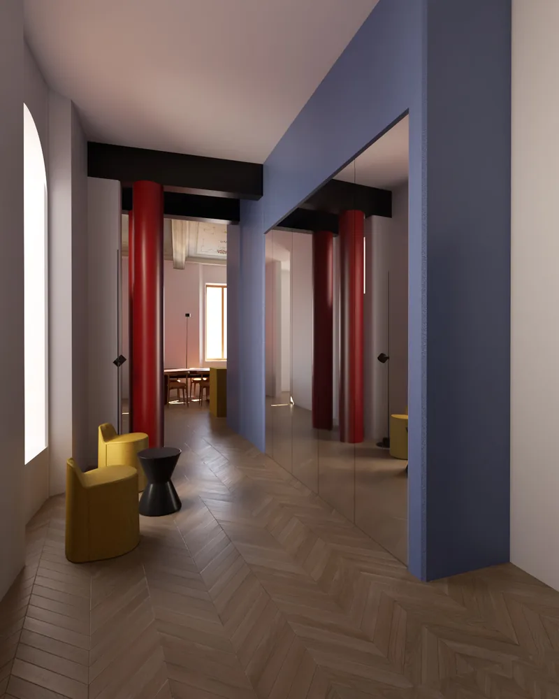

Samuele Silvestri, architetto a Modena
Ricerca e progettazione architettonica, dal dettaglio costruttivo alla scala urbana. Disegno, realtà virtuale, co-progettazione e ricerca compositiva guidano un metodo fondato su ascolto e chiarezza progettuale.
Ogni progetto nasce per rispondere con efficacia e innovazione alle sfide dello spazio contemporaneo. Dopo esperienze professionali a Mantova, Berlino e Roma, lo studio opera oggi a Modena, occupandosi di progettazione e ristrutturazione di appartamenti e spazi commerciali.
L'attività di architetto a Modena si fonda su un approccio attento al contesto, alla qualità dello spazio e alle esigenze del cliente. La specializzazione in progettazione in siti storici e contesti UNESCO consente di affrontare ogni intervento con sensibilità e profondo rispetto per l'esistente.
Il metodo
Ogni progetto parte dall'ascolto e dal rilievo dello spazio esistente. Disegni, render e realtà virtuale permettono di vedere e discutere le soluzioni prima di cominciare i lavori, e di decidere insieme al cliente distribuzione, materiali e luce.
Lo studio segue poi le pratiche edilizie, la direzione lavori e il disegno degli arredi su misura: il progetto resta nelle stesse mani dall'idea alla consegna.
Dove lavora lo studio
Lo studio ha sede a Modena, in via Asiago 58, e segue progetti in tutta Italia. Tra i lavori recenti ci sono gli interni di Le Pietre, un edificio residenziale nuovo a Castelfranco Emilia, i due appartamenti di via Carteria e il locale Anita, entrambi nel centro storico di Modena, gli appartamenti Casa AD e Casa CM, una villa a Casalgrande in provincia di Reggio Emilia e i concorsi Spazio Persona a Fano e Mensa universitaria De Gennaro a Napoli.
Gioielli e studi sulla forma
Accanto all'architettura, lo studio porta avanti studi sperimentali sulla forma elementare, con trattamenti superficiali diversi: una ricerca su materiali, colori e luce che prende la forma di gioielli, come le serie Alberi, in titanio, e Cielo, in ceramica.
Collaborazioni
Per le visualizzazioni architettoniche lo studio collabora con VISION, studio di Modena specializzato in render e realtà virtuale. Gli interni di Le Pietre sono stati progettati per Modena Ingegneria, su progetto architettonico di TT Architettura; via Carteria è sviluppato con il Geom. Alessandro Orrea; Casa AD è stata progettata con tilde studio.

Due appartamenti

Bar e ristorante

Interni residenziali

Gioielli in titanio
Parliamo del tuo progetto
Scrivi a info@samuelesilvestriarchitetto.com o chiama il +39 366 493 8286. Lo studio è a Modena, in via Asiago 58, e segue progetti in tutta Italia.